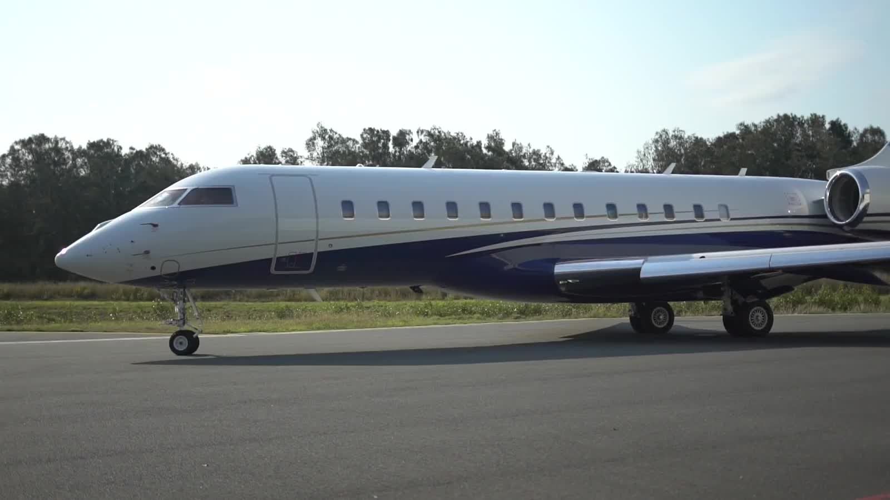

История в нескольких сценах
Самолёт на полосе, расширяющееся овальное окно, салон, взлёт и финальная сумеречная сцена.
НЕЗАВИСИМЫЙ ВИЗУАЛЬНЫЙ КОНЦЕПТ
Почувствовать высоту.
Кинематографический сайт об авиации: реальная видеосъёмка, выразительная типографика и переходы, связанные с прокруткой.

IN MOTIONRUSJET01 / ЗАДАЧА
Исследовать, как передать ощущение частного перелёта средствами веба: через масштаб кадра, ритм видео и переходы от самолёта на полосе к салону и взлёту.
Это самостоятельная визуальная концепция. Она не представляется официальным сайтом авиакомпании или выполненным клиентским заказом.
02 / КАК УСТРОЕНО
Статический сайт на HTML, CSS и JavaScript использует настоящие лицензированные видеоматериалы. Прокрутка меняет положение воспроизведения; когда пользователь останавливается, видео продолжает естественное движение.
GSAP ScrollTrigger управляет переходами и типографикой. Видеофайлы хранятся вместе с сайтом, загружаются по мере необходимости; одновременно играет только активная глава.
03 / ЧТО ВНУТРИ
Самолёт на полосе, расширяющееся овальное окно, салон, взлёт и финальная сумеречная сцена.
Реальная съёмка остаётся основой визуального языка и во время прокрутки, и во время остановки.
При настройке уменьшения движения сайт показывает кадры без автоматического воспроизведения.
Источники и лицензии материалов вынесены в THIRD_PARTY.md. Стоковые самолёты не выдаются за флот компании.
04 / СТАТУС
Опубликованный независимый визуальный концепт об авиации. Можно исследовать переходы, ритм и работу видео в браузере, а реализацию — в открытом репозитории.